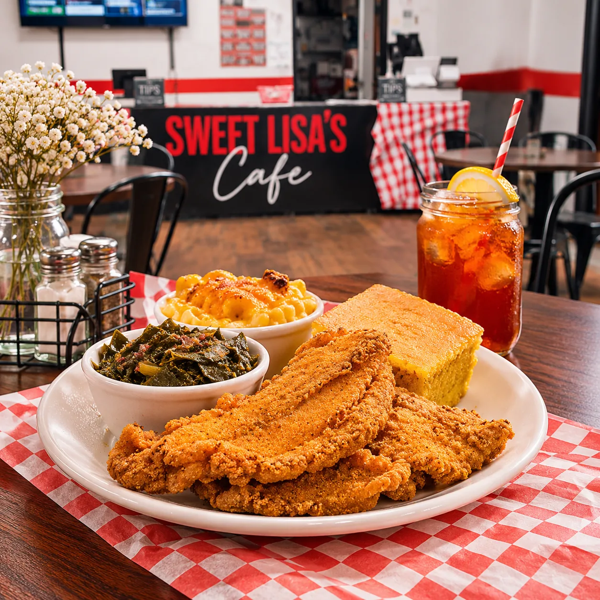
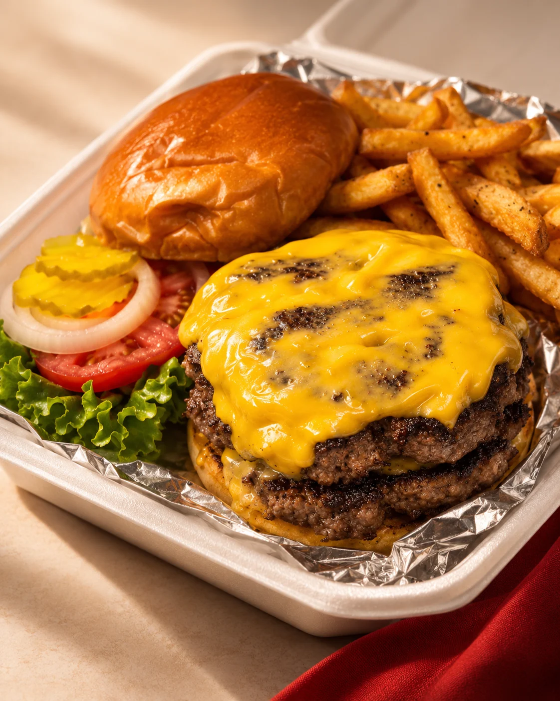
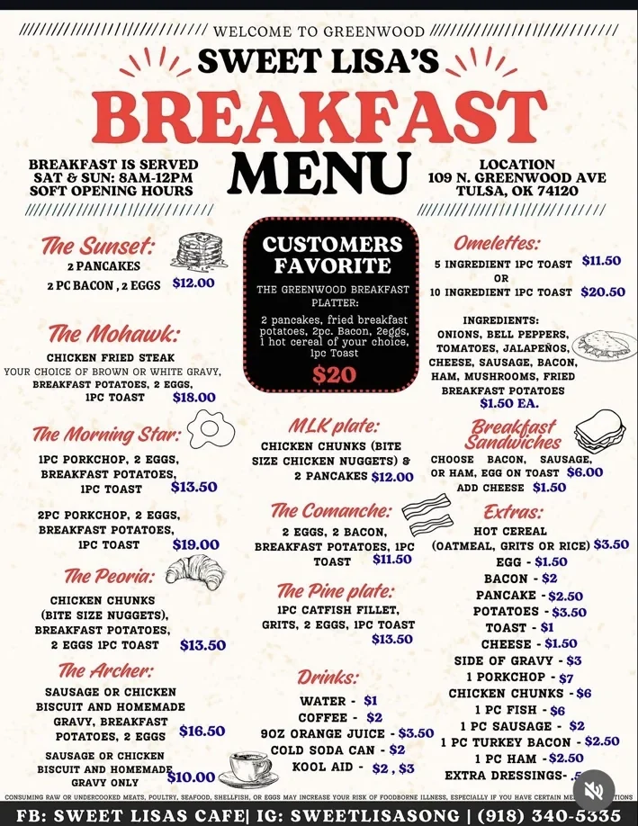
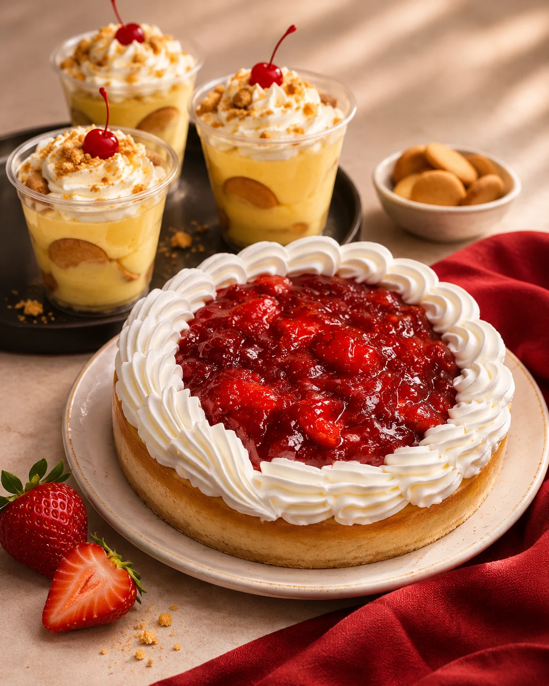

Soul Food
Fried Catfish
Crispy catfish, shown with fried okra and cornbread in the café’s social photos.





Sweet Lisa’s previously shared a breakfast menu featuring platters, pancakes, eggs, omelettes and more. Open the original image to see that reference — its prices and hours reflect 2025, not a confirmed current menu.